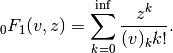

scipy.special.hyp0f1¶
- scipy.special.hyp0f1(v, z)[source]¶
Confluent hypergeometric limit function 0F1.
Parameters : v, z : array_like
Input values.
Returns : hyp0f1 : ndarray
The confluent hypergeometric limit function.
Notes
This function is defined as:

It’s also the limit as q -> infinity of 1F1(q;v;z/q), and satisfies the differential equation :math:``f’‘(z) + vf’(z) = f(z)`.